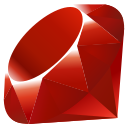
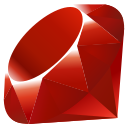

Bonjour üëã
Après avoir étudié le tourisme puis travaillé dans ce domaine pendant environ 2 ans, j'ai découvert un grand intérêt pour l'informatique et une envie d'acquérir de nouvelles compétences. J'ai donc pris la décision de changer totalement de voie pour me lancer dans ce domaine qui me correspond beaucoup plus. J'ai intégré Ada Tech School en octobre pour 9 mois de formation à temps plein, basée sur la pratigue et les projets en groupe, et je suis actuellement à la recherche d'une alternance à partir juin pour une durée de 12 mois, afin de poursuivre mon apprentissage au rythme de 4 jours par semaine en entreprise.
Hard Skills


 
